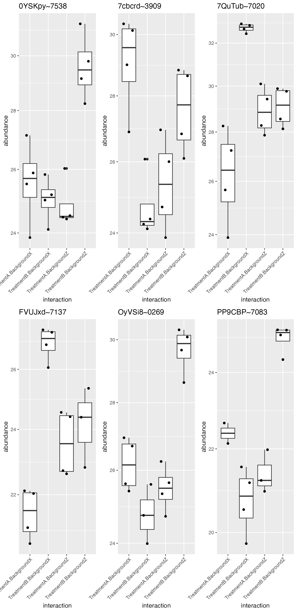

Modelling Dataset with two Factors.
Witold Wolski
01 June, 2021
Source:vignettes/Modelling2Factors.Rmd
Modelling2Factors.RmdModel Fitting
library(prolfqua)
library(tidyverse)
conflicted::conflict_prefer("filter", "dplyr")
pMerged <- prolfqua::data_Yeast2Factor
pMerged$data$Run_ID <- as.numeric(pMerged$data$Run_ID)
pMerged$config$table$getWorkIntensity()## [1] "transformedIntensity"
pMerged$factors()## # A tibble: 18 x 5
## raw.file sampleName condition_ batch_ Run_ID
## <chr> <chr> <chr> <chr> <dbl>
## 1 20170314_06_ge3 Ethanol~p2370~06 Ethanol p2370 6
## 2 20170314_08_ge1 Ethanol~p2370~08 Ethanol p2370 8
## 3 20170314_09_ge2_rep Ethanol~p2370~09 Ethanol p2370 9
## 4 20170314_12_ge4 Ethanol~p2370~12 Ethanol p2370 12
## 5 20180313_03_ge4_ls_180314100836 Ethanol~p2691~03 Ethanol p2691 3
## 6 20180313_06_ge1_ap Ethanol~p2691~06 Ethanol p2691 6
## 7 20180313_09_ge3_cw Ethanol~p2691~09 Ethanol p2691 9
## 8 20180313_10_ge2_zf Ethanol~p2691~10 Ethanol p2691 10
## 9 20180313_12_ge1_jtk Ethanol~p2691~12 Ethanol p2691 12
## 10 20170314_02_g3_rep Glucose~p2370~02 Glucose p2370 2
## 11 20170314_04_g4 Glucose~p2370~04 Glucose p2370 4
## 12 20170314_07_g1_a Glucose~p2370~07 Glucose p2370 7
## 13 20170314_10_g1_b Glucose~p2370~10 Glucose p2370 10
## 14 20170314_11_g2 Glucose~p2370~11 Glucose p2370 11
## 15 20180313_04_g3_sw_180314112243 Glucose~p2691~04 Glucose p2691 4
## 16 20180313_05_g2_mb Glucose~p2691~05 Glucose p2691 5
## 17 20180313_08_g4_cm Glucose~p2691~08 Glucose p2691 8
## 18 20180313_11_g1_ap Glucose~p2691~11 Glucose p2691 11
formula_Batches <-
strategy_lm("transformedIntensity ~ condition_ * batch_ ")
# specify model definition
modelName <- "Model"
DEBUG <- TRUE
Contrasts <- c("Glucose - Ethanol" = "condition_Glucose - condition_Ethanol",
"p2370 - p2691" = "batch_p2370 - batch_p2691",
"Glucose_vs_Ethanol_gv_p2370" = "`condition_Glucose:batch_p2370` - `condition_Ethanol:batch_p2370`",
"Glucose_vs_Ethanol_gv_p2691" = "`condition_Glucose:batch_p2691` - `condition_Ethanol:batch_p2691`",
"Interaction" = "`Glucose_vs_Ethanol_gv_p2370` - `Glucose_vs_Ethanol_gv_p2691`"
)
mod <- prolfqua::build_model(
pMerged$data,
formula_Batches,
subject_Id = pMerged$config$table$hierarchyKeys() )
mod$anova_histogram()## $plot
p-value distributions for ANOVA analysis.
##
## $name
## [1] "Anova_p.values_Model.pdf"Examine proteins with a significant interaction between the two factors treatment and batch.
ANOVA <- mod$get_anova()
ANOVA %>% filter(factor == "condition_:batch_") %>% arrange(FDR.Pr..F.) %>% head(5)## # A tibble: 5 x 10
## protein_Id isSingular nrcoef factor Df Sum.Sq Mean.Sq F.value Pr..F.
## <chr> <lgl> <int> <chr> <int> <dbl> <dbl> <dbl> <dbl>
## 1 sp|P36095|VP~ FALSE 4 conditio~ 1 11.0 11.0 79.0 9.46e-6
## 2 sp|Q12159|YR~ FALSE 4 conditio~ 1 4.86 4.86 33.9 4.46e-5
## 3 sp|P09624|DL~ FALSE 4 conditio~ 1 1.40 1.40 27.5 1.24e-4
## 4 sp|Q08225|DP~ FALSE 4 conditio~ 1 3.59 3.59 24.2 2.83e-4
## 5 sp|P32783|MC~ FALSE 4 conditio~ 1 7.90 7.90 37.4 4.85e-4
## # ... with 1 more variable: FDR.Pr..F. <dbl>
protIntSig <- ANOVA %>% filter(factor == "condition_:batch_") %>% filter(FDR.Pr..F. < 0.05)
protInt <- pMerged$get_copy()
protInt$data <- protInt$data[protInt$data$protein_Id %in% protIntSig$protein_Id,]
ggpubr::ggarrange(plotlist = protInt$get_Plotter()$boxplots()$boxplot)
Compute contrasts
contr <- prolfqua::ContrastsModerated$new(prolfqua::Contrasts$new(mod, Contrasts))
contr$get_contrasts_sides()## # A tibble: 5 x 3
## contrast c1 c2
## <chr> <chr> <chr>
## 1 Glucose - Ethanol condition_Glucose condition_Ethanol
## 2 p2370 - p2691 batch_p2370 batch_p2691
## 3 Glucose_vs_Ethanol_gv_p2~ condition_Glucose:batch_p~ condition_Ethanol:batch_~
## 4 Glucose_vs_Ethanol_gv_p2~ condition_Glucose:batch_p~ condition_Ethanol:batch_~
## 5 Interaction Glucose_vs_Ethanol_gv_p23~ Glucose_vs_Ethanol_gv_p2~
contrdf <- contr$get_contrasts()
plotter <- contr$get_Plotter()
plotter$volcano()## $FDR
plotter$ma_plot()
Annalyse contrasts with missing data imputation
pMerged$config$table$fkeysDepth()## [1] "condition_" "batch_"
#ContrastsSimpleImpute$debug("get_contrasts")
contrSimple <- ContrastsSimpleImpute$new(pMerged, Contrasts)
contrdfSimple <- contrSimple$get_contrasts()
pl <- contrSimple$get_Plotter()
pl$histogram_estimate()
pl$volcano()## $FDR
Merge nonimputed and imputed data.
dim(contr$get_contrasts())## [1] 1695 15
dim(contrSimple$get_contrasts())## [1] 2500 15
mergedContrasts <- prolfqua::addContrastResults(prefer = contr, add = contrSimple)$merged
mergedContrasts$modelName <- as.factor(mergedContrasts$modelName)
myColors <- c("green","black")
names(myColors) <- levels(as.factor(mergedContrasts$modelName))
colScale <- scale_colour_manual(name = "modelName",values = myColors)
cM <- prolfqua::Contrasts_Plotter$new(mergedContrasts, subject_Id = contr$subject_Id)
plot <- cM$volcano()
plot$FDR + colScale
sigInteraction <- mergedContrasts %>%
filter(contrast == "Interaction" & FDR < 0.2)
protInt <- pMerged$get_copy()
protInt$data <- protInt$data[protInt$data$protein_Id %in% sigInteraction$protein_Id,]
ggplot(data=protInt$data ,aes(x=sampleName,y=protein_Id,fill=transformedIntensity))+
geom_tile() + scale_fill_distiller(palette = "RdYlBu") +
theme(axis.text.x = element_text(angle = 90, vjust = 0.5, hjust=1))
hm <- protInt$get_Plotter()$heatmap()
hm
Proteins with significant Interactions